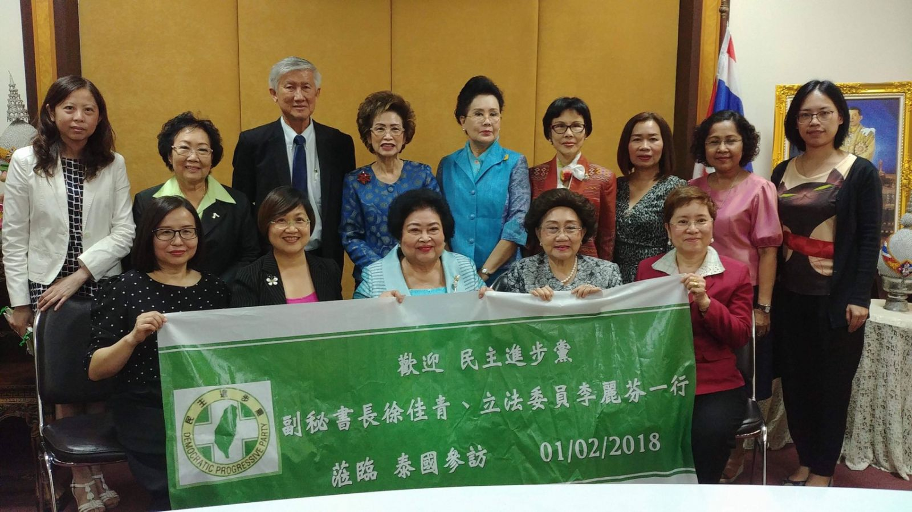
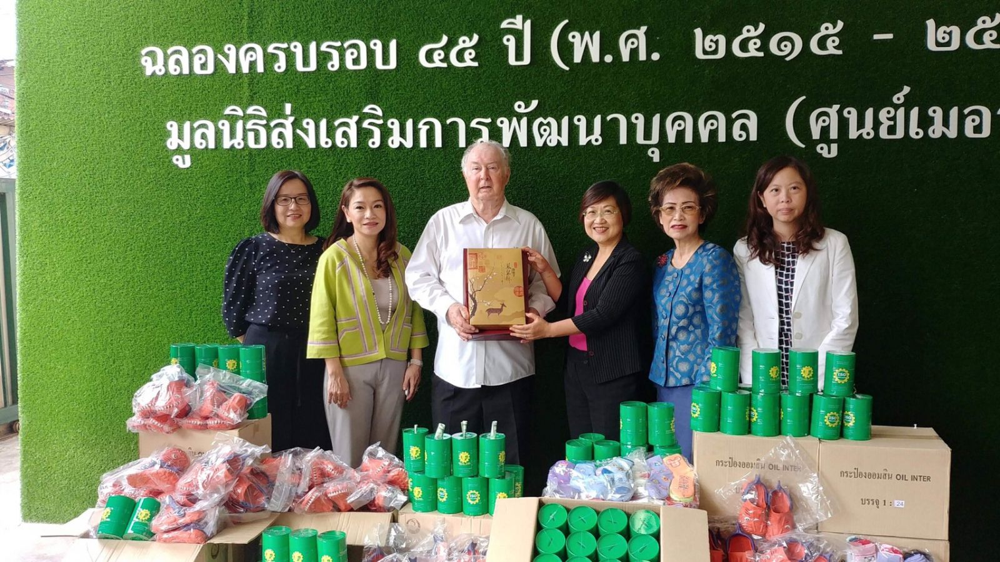

2018-02-02
民進黨中央泰國參訪團新聞稿
台泰攜手提升兒少及婦女權益
民進黨中央黨部泰國參訪團2月1日抵達泰國曼谷，本黨東南亞黨部主委何素珍及海外發展委員會成員設宴迎接；2月2日訪團拜會曼谷地區社會福利機構，捐贈兒童所需物資，並針對兒少權益及社會福利政策進行討論。
2月1日晚宴台灣僑界代表出席踴躍，副秘書長徐佳青代表蔡英文主席，感謝東南亞黨部何主委及海外發展委員會諸位委員長期支持民進黨，並勉勵台僑團體協助政府推動新南向政策，扮演台灣與泰國民間交流最穩固的橋樑。
2月2日上午民進黨中央泰國參訪團及何素珍主委至喬麥爾神父創立的人類發展基金會梅西中心捐贈兒童物資及捐款，考察曼谷地區兒童福利機構，與當地NGO針對無依兒童照顧及教育需求進行意見交流。
立法委員李麗芬表示，貧窮、家暴、隔代教養是所有國家兒童都可能面臨的風險，《聯合國兒童權利公約》針對兒權保障奠定國際共同基礎，期盼台泰兩國民間兒少團體保持合作關係，為保障兒童人權共同努力，人權推展與也是新南向政策不可或缺的一環。

下午民進黨參訪團至皇家基金會拜會，聆聽Asanee Saovapap主席等多位代表分享泰國近年社福及婦女權益保障成果，亦說明「4.0 Thailand 」政策針對泰國中下階層及女性的經濟實力及權利提升為努力目標。
民進黨參訪團由徐佳青副秘書長及李麗芬委員代表回應，闡述民進黨推動立法保障台灣女性公共參與，近年來女性國會及地方議員比率將近四成，國中小校長及大學女性教授比例也持續提升。
徐佳青副秘書長強調，移民議題是台灣社會非常關注的政策焦點，泰籍移工移民在台灣將近10萬人，保障移民移工權益是台泰雙方可雙向合作的共同目標。
皇家基金會Asanee主席感謝台灣在2011年泰國水災時踴躍捐贈，協助泰國受災民眾重建家園，該基金會秘書長Srithong表示，水災援助開啟基金會與台灣僑界公益慈善合作關係，期盼未來能在現有基礎上，強化台泰兩國婦女及社會福利議題交流合作。
